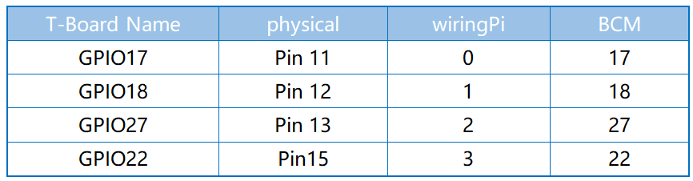
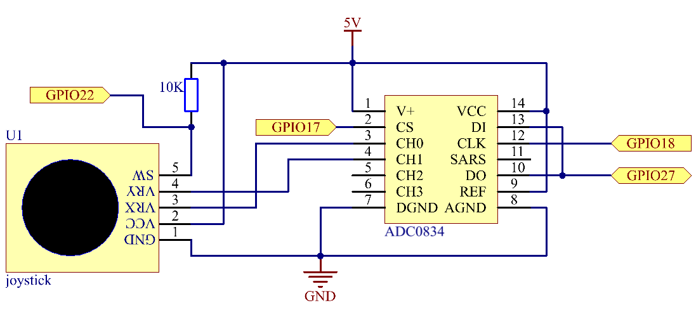
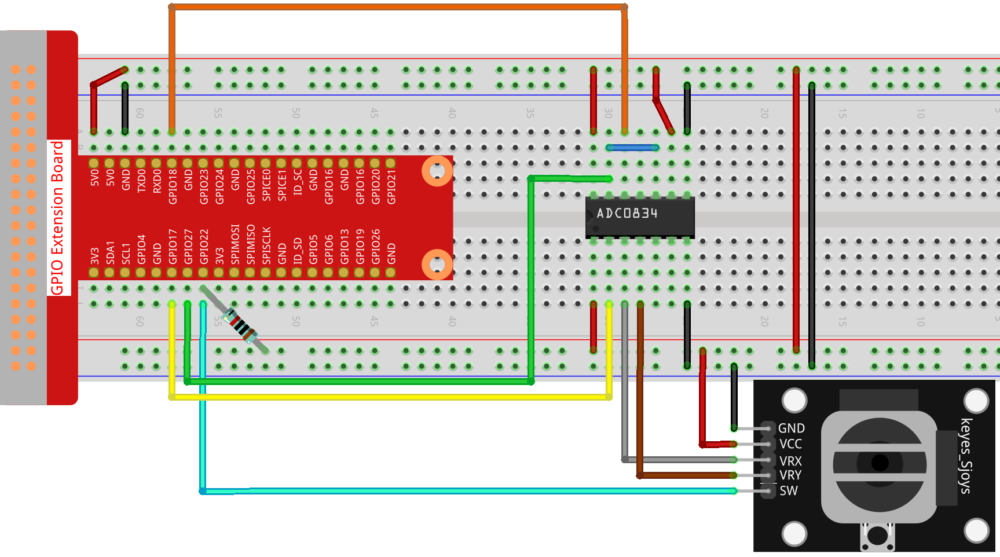

Bemerkung
Hallo und willkommen in der SunFounder Raspberry Pi & Arduino & ESP32 Enthusiasten-Gemeinschaft auf Facebook! Tauchen Sie tiefer ein in die Welt von Raspberry Pi, Arduino und ESP32 mit anderen Enthusiasten.
Warum beitreten?
Expertenunterstützung: Lösen Sie Nachverkaufsprobleme und technische Herausforderungen mit Hilfe unserer Gemeinschaft und unseres Teams.
Lernen & Teilen: Tauschen Sie Tipps und Anleitungen aus, um Ihre Fähigkeiten zu verbessern.
Exklusive Vorschauen: Erhalten Sie frühzeitigen Zugang zu neuen Produktankündigungen und exklusiven Einblicken.
Spezialrabatte: Genießen Sie exklusive Rabatte auf unsere neuesten Produkte.
Festliche Aktionen und Gewinnspiele: Nehmen Sie an Gewinnspielen und Feiertagsaktionen teil.
👉 Sind Sie bereit, mit uns zu erkunden und zu erschaffen? Klicken Sie auf [hier] und treten Sie heute bei!
2.1.6 Joystick
Einführung
In diesem Projekt lernen wir, wie der Joystick funktioniert. Wir manipulieren den Joystick und zeigen die Ergebnisse auf dem Bildschirm an.
Komponenten

Prinzip
Joystick
Die Grundidee eines Joysticks besteht darin, die Bewegung eines Sticks in elektronische Informationen umzuwandeln, die ein Computer verarbeiten kann.
Um dem Computer einen vollständigen Bewegungsbereich zu übermitteln, muss ein Joystick die Position des Sticks auf zwei Achsen messen - der X-Achse (von links nach rechts) und der Y-Achse (nach oben und unten). Genau wie in der Grundgeometrie bestimmen die XY-Koordinaten genau die Position des Sticks.
Um die Position des Steuerknüppels zu bestimmen, überwacht das Joystick-Steuerungssystem einfach die Position jeder Welle. Das herkömmliche analoge Joystick-Design macht dies mit zwei Potentiometern oder variablen Widerständen.
Der Joystick verfügt außerdem über einen digitalen Eingang, der beim Herunterdrücken des Joysticks betätigt wird.

Schematische Darstellung
Wenn die Daten des Joysticks gelesen werden, gibt es einige Unterschiede zwischen den Achsen: Die Daten der X- und Y-Achse sind analog. Daher muss ADC0834 verwendet werden, um den Analogwert in einen Digitalwert umzuwandeln. Die Daten der Z-Achse sind digital, sodass Sie den GPIO direkt zum Lesen oder den ADC zum Lesen verwenden können.
 Experimentelle Verfahren
Schritt 1: Bauen Sie die Schaltung auf.
{kind=link}
Schritt 2: Gehen Sie zum Ordner der Kode.
cd ~/davinci-kit-for-raspberry-pi/c/2.1.6/
Schritt 3: Kompilieren Sie die Kode.
gcc 2.1.6_Joystick.c -lwiringPi
Schritt 4: Führen Sie die ausführbare Datei aus.
sudo ./a.out
Nachdem die Kode ausgeführt wurde, drehen Sie den Joystick, und die entsprechenden Werte von x, y, Btn werden auf dem Bildschirm angezeigt.
Code
#include <wiringPi.h>
#include <stdio.h>
#include <softPwm.h>
typedef unsigned char uchar;
typedef unsigned int uint;
#define ADC_CS 0
#define ADC_CLK 1
#define ADC_DIO 2
#define BtnPin 3
uchar get_ADC_Result(uint channel)
{
uchar i;
uchar dat1=0, dat2=0;
int sel = channel > 1 & 1;
int odd = channel & 1;
digitalWrite(ADC_CLK, 1);
delayMicroseconds(2);
digitalWrite(ADC_CLK, 0);
delayMicroseconds(2);
pinMode(ADC_DIO, OUTPUT);
digitalWrite(ADC_CS, 0);
// Start bit
digitalWrite(ADC_CLK,0);
digitalWrite(ADC_DIO,1); delayMicroseconds(2);
digitalWrite(ADC_CLK,1); delayMicroseconds(2);
//Single End mode
digitalWrite(ADC_CLK,0);
digitalWrite(ADC_DIO,1); delayMicroseconds(2);
digitalWrite(ADC_CLK,1); delayMicroseconds(2);
// ODD
digitalWrite(ADC_CLK,0);
digitalWrite(ADC_DIO,odd); delayMicroseconds(2);
digitalWrite(ADC_CLK,1); delayMicroseconds(2);
//Select
digitalWrite(ADC_CLK,0);
digitalWrite(ADC_DIO,sel); delayMicroseconds(2);
digitalWrite(ADC_CLK,1);
digitalWrite(ADC_DIO,1); delayMicroseconds(2);
digitalWrite(ADC_CLK,0);
digitalWrite(ADC_DIO,1); delayMicroseconds(2);
for(i=0;i<8;i++)
{
digitalWrite(ADC_CLK,1); delayMicroseconds(2);
digitalWrite(ADC_CLK,0); delayMicroseconds(2);
pinMode(ADC_DIO, INPUT);
dat1=dat1<<1 | digitalRead(ADC_DIO);
}
for(i=0;i<8;i++)
{
dat2 = dat2 | ((uchar)(digitalRead(ADC_DIO))<<i);
digitalWrite(ADC_CLK,1); delayMicroseconds(2);
digitalWrite(ADC_CLK,0); delayMicroseconds(2);
}
digitalWrite(ADC_CS,1);
pinMode(ADC_DIO, OUTPUT);
return(dat1==dat2) ? dat1 : 0;
}
int main(void)
{
uchar x_val;
uchar y_val;
uchar btn_val;
if(wiringPiSetup() == -1){ //when initialize wiring failed,print messageto screen
printf("setup wiringPi failed !");
return 1;
}
pinMode(BtnPin, INPUT);
pullUpDnControl(BtnPin, PUD_UP);
pinMode(ADC_CS, OUTPUT);
pinMode(ADC_CLK, OUTPUT);
while(1){
x_val = get_ADC_Result(0);
y_val = get_ADC_Result(1);
btn_val = digitalRead(BtnPin);
printf("x = %d, y = %d, btn = %d\n", x_val, y_val, btn_val);
delay(100);
}
return 0;
}
Code Erklärung
uchar get_ADC_Result(uint channel)
{
uchar i;
uchar dat1=0, dat2=0;
int sel = channel > 1 & 1;
int odd = channel & 1;
digitalWrite(ADC_CLK, 1);
delayMicroseconds(2);
digitalWrite(ADC_CLK, 0);
delayMicroseconds(2);
pinMode(ADC_DIO, OUTPUT);
digitalWrite(ADC_CS, 0);
// Start bit
digitalWrite(ADC_CLK,0);
digitalWrite(ADC_DIO,1); delayMicroseconds(2);
digitalWrite(ADC_CLK,1); delayMicroseconds(2);
//Single End mode
digitalWrite(ADC_CLK,0);
digitalWrite(ADC_DIO,1); delayMicroseconds(2);
digitalWrite(ADC_CLK,1); delayMicroseconds(2);
......
Der Arbeitsprozess der Funktion ist in in 2.1.4 Potentiometer beschrieben.
while(1){
x_val = get_ADC_Result(0);
y_val = get_ADC_Result(1);
btn_val = digitalRead(BtnPin);
printf("x = %d, y = %d, btn = %d\n", x_val, y_val, btn_val);
delay(100);
}
VRX und VRY des Joysticks sind mit CH0 bzw. CH1 des ADC0834 verbunden.
Daher wird die Funktion getResult() aufgerufen, um die Werte von CH0 und CH1 zu lesen.
Dann sollten die gelesenen Werte in den Variablen x_val und y_val gespeichert werden.
Lesen Sie außerdem den Wert von SW des Joysticks und speichern Sie ihn in der Variablen btn_val.
Schließlich sollen die Werte von x_val, y_val und btn_val mit der Funktion print() gedruckt werden.